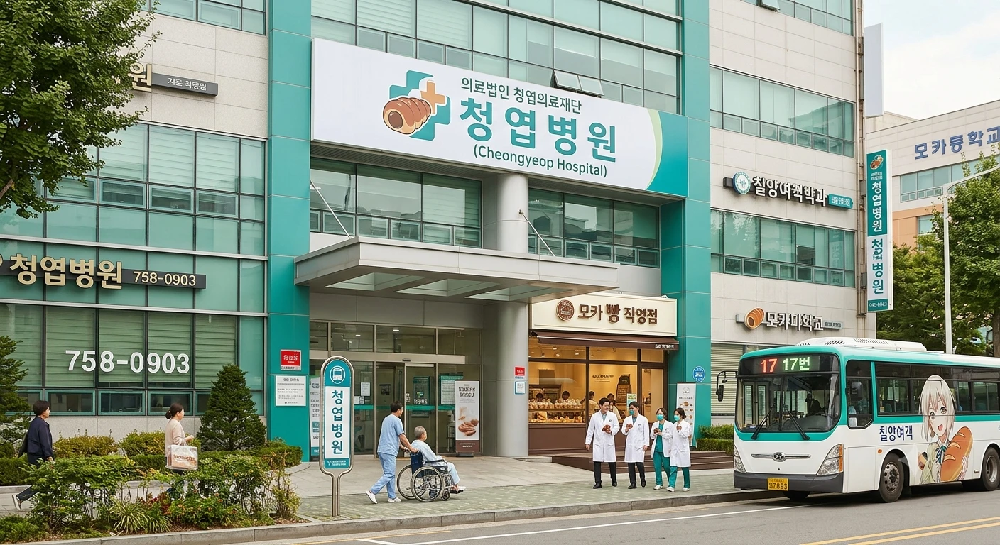

[청엽병원 전경]| 명칭 | 의료법인 청엽의료재단 청엽병원 |
|---|---|
| 개원 | 1976년 5월 15일 |
| 종별 | 종합병원 |
| 병원장 | 구청엽 (의학박사·신경과 전문의) |
| 명예 병원장 | 아오바 모카 (청엽구 명예 구청장 겸임) |
| 소재지 | 효빈광역시 청엽구 청엽동 79-3 (청엽구청역 도보 10분) |
| 병상 수 | 518병상 |
| 대표 전화 | 079-758-0903 |
| 웹사이트 | 청엽병원 공식 홈페이지 |
효빈광역시 청엽구 청엽동 주민들의 든든한 건강 길잡이가 되어주는 전통의 거점 종합병원.
서구에 초거대 공룡인 효빈대학교병원이 버티고 있다면, 청엽구 남부 택지지구와 배후 주거단지의 급성기 질환 및 1차 응급의료는 사실상 이 병원이 반세기가 넘는 시간 동안 묵묵히 전담해 왔다.
지리적으로 '모카 신도시'라 불리는 청엽동 한복판에 자리 잡고 있어, 도시철도 랜드마크들과 함께 아오바 모카 유니버스의 전폭적인 드랍더비트(?)를 맞이한 병원이다. 덕분에 병원 밥보다 빵 냄새가 더 많이 나는 기괴하면서도 평화로운 치유의 성지로 명성이 자자하다.
1979년 청엽구가 자치구로 공식 승격되기도 전인 1976년, 허허벌판이던 청엽면 소원리 일대가 택지지구로 지정되면서 밀려드는 이주민들을 치료하기 위해 천막 진료소를 청산하고 의욕적으로 개원했다. 당시로서는 청엽동 유일의 근대식 3층 콘크리트 빌딩 종합병원으로, 주민들에게는 "청엽병원 불빛만 켜져 있으면 밤에 다쳐도 죽지 않는다"는 절대적인 신뢰를 받았다.
2007년 윤대환 시정의 무리한 의료원 민영화 사태 및 대중교통 칼질 당시, 청엽병원 역시 재정적 압박과 교통 고립이라는 최악의 헬게이트를 겪었다. 당시 병원 진입로가 갈색 버스 장벽에 막혀 구급차가 갇히는 수난을 당하기도 했으나, 청엽동 주민들이 직접 인간 띠를 만들어 구급차 길을 터주는 눈물겨운 유대감 덕분에 도산 위기를 기적적으로 극복해 냈다.
2015년 이후 청엽동 전체가 '아오바 모카 성지'로 대대적인 리브랜딩을 감행하자, 병원 이사회 역시 고리타분한 백색 인테리어를 버리고 청록색 포인트 컬러와 빵 중심의 메디컬 케어 시스템을 도입했다. 청엽구 명예 구청장인 아오바 모카를 명예 병원장으로 추대하면서, 현재는 전 세계 유일의 '빵 요법'과 '마이페이스 멘탈 케어'를 정식 의학 학회에 보고하는 기상천외한 종합병원으로 거듭났다.
청엽병원은 50년 전통의 거점 병원답게 탄탄한 임상 경험을 가진 베테랑 의료진과, 모카 유니버스 특유의 나른하고 따뜻한 감성으로 무장한 직원들이 조화를 이루고 있다.
청엽동 교통 요지에 있어 대중교통으로 찾아오기 아주 쾌적하다.
청엽역 광장에서 빵지순례 덕후들에게 행패를 부리다가 극대노한 시민들의 '단팥빵·메론빵 융단폭격'을 맞고 혼비백산해 도망친 윤대환 전 시장이 온몸에 단팥을 뒤집어쓴 채 이 병원 응급실로 실려 왔었다. 당시 당직의가 차트를 보며 "외상은 전혀 없으나, 단팥의 점성으로 인한 피부 모공 폐쇄 및 메론빵 격돌로 인한 급성 정신적 쿠쿠루쿠쿠(?) 충격이 의심된다"며 병실 천장에 거대한 초코 소라빵 그림을 붙여놓는 멘탈 치료를 감행해 그를 완벽히 확인사살했다.
병원 로비 정중앙에 설치된 간이 매점은 대기업 편의점이 아니라 청엽동 베이커리 연합회가 직접 운영하는 '모카빵 직영점'이다. 아침 회진 시간이 되면 의사들이 회진 카트 밑에 메론빵을 숨겨두고 하나씩 우물거리며 다니다가 수간호사에게 등짝 스매싱을 맞는 것이 병원의 유쾌한 일상이다. 심지어 인턴들이 가운 안주머니에 소라빵을 넣고 다니다가 체온에 초콜릿이 녹아 가운을 갈색으로 물들이는 대참사도 심심찮게 일어난다.
매년 9월 3일(명예 병원장 아오바 모카의 생일 주간 및 청엽 브레드 페스티벌)에는 외래 진료를 받는 모든 환자에게 진료비 영수증과 함께 야마하 베이커리 협찬 '생일 축하 소라빵'을 1인당 1개씩 처방전 대신 무료로 배포한다. 이날은 감기약 한 알을 타기 위해 할머니, 할아버지들까지 접수처에 줄을 서는 기현상이 벌어지며, 원무과 앞 로비는 새벽부터 빵을 받으려는 인파로 장사진을 이룬다.
청엽구 을 지역구의 소판권 국회의원(전 청엽경찰서 강력계 형사 경위)이 관내 응급의료 체계 점검을 위해 야간에 청엽병원 응급실을 둘러보던 중 벌어진 사건이다. 만취한 거구의 주폭 한 명이 "의사가 왜 이렇게 반말조로 나긋나긋하냐! 당장 마약성 주사 놔라!"라며 링거 거치대를 휘두르고 간호사를 위협했다.
그 순간 정장 차림으로 서 있던 소판권 의원이 0.1초 만에 돌진하여 주폭의 오른팔을 꺾고 바닥에 꽂아버리는 강력계 3초 제압 테이크다운을 작렬시켰다. 취객이 비명을 지르며 제압당하자, 소 의원은 그의 주머니에서 흘러나온 훔친 병원 매점 초코 소라빵을 집어 들며 싸늘하게 일침을 날렸다. "이보시오, 청엽병원 응급실은 아픈 시민들 생명 살리는 곳이지 당신 행패 부리는 술집이 아니요. 소라빵은 압수하고 청엽경찰서 유치장으로 직행시킵니다." 소 의원의 시원시원한 사이다 진압에 응급실 환자들과 간호사들이 환호성을 질렀다.
비마리 유적지구에서 "일본 귀신 물러가라"며 굵은 소금을 뿌리고 난동을 피우다 시민들에게 두들겨 맞은 국민의힘 전 당협위원장 김상언이, 극심한 급체와 홧병으로 뒷목을 잡고 청엽병원 응급실로 실려 왔다. 그는 베드에 누워서도 "내가 검사 출신인데 이 병원도 오타쿠 빵쟁이들 소굴이냐!"라며 고래고래 악을 썼다.
이에 구청엽 병원장이 슬리퍼를 끌고 터덜터덜 다가와 청진기를 대더니 나른하게 진단했다. "아이고~ 위에 불온한 소금기가 꽉 차서 굳었네~ 자, 엑소시즘 특효 처방 갑니다~" 병원장은 간호사에게 지시해 따뜻한 무가당 쌀 메론빵과 보리차 한 대접을 억지로 먹였다. 빵을 씹던 김상언은 자기도 모르게 달콤한 탄수화물의 맛에 취해 분노가 사르르 녹아내리며 얌전해졌고, 옆에 있던 소판권 의원실 보좌관이 그 꼴을 촬영하자 창피함을 이기지 못하고 이불을 뒤집어쓴 채 퇴원했다.
효빈디자인진흥원 제7대 원장을 역임했던 고하나(INFP, 핑크 저지의 전설)가 청엽동 인쇄골목 감리를 마치고 복귀하던 중, 청엽병원 로비에서 풍겨오는 갓 구운 단팥빵 냄새에 홀려 홀린 듯 병원 1층으로 들어왔다. 그러나 갑자기 수많은 외래 환자들과 인파를 마주하자 극심한 대인기피증이 발동해 패닉에 빠져버렸다.
그녀는 핑크 저지 지퍼를 목 끝까지 올리고 로비 구석에 세워져 있던 이동식 휠체어 밑 좁은 틈에 들어가 웅크린 채 덜덜 떨며 숨어버렸다. "휠체어 밑에 핑크색 괴생명체가 웅크리고 있다"는 신고를 받고 출동한 정미숙 수간호사가 휠체어를 치우자, 고하나는 눈물을 글썽이며 태블릿 펜을 꼭 쥐고 "히익... 빵, 빵만 사러 온 건데요...!"라며 바들바들 떨었다. 수간호사가 갓 구운 메론빵을 쥐여주자 그제야 안정을 찾고 빵을 오독오독 씹으며 진흥원 관용차로 무사히 구출되었다.
자타공인 뼛속까지 아오바 모카 오시(최애)인 박효빈 효빈시장이, 청엽지구 도시 재생 현장 점검을 핑계로 새벽 6시에 홀로 자전거를 타고 청엽병원에 기습 방문했다. 시장은 경비원의 눈을 피해 5층 병원장실로 살금살금 올라갔다.
원장실 책상 위에 모셔진 명예 병원장 아오바 모카 1/7 스케일 피규어 앞에, 자신이 베이커리 거리에서 오픈런으로 사 온 따끈따끈한 특제 메론빵 3개를 제물처럼 정성스레 바치고 두 손 모아 기도를 올리고 있었다. 때마침 새벽 순회를 돌던 구청엽 병원장이 문을 열었다가 시장의 이 경건한(?) 덕질 제사 현장을 정면으로 목격했다. 눈이 마주친 박 시장은 얼굴이 새빨개져서 "시정 발전을 위한 보건 의료 기원 의식이었습니다!"라고 둘러댔으나, 병원장은 껄껄 웃으며 빵 하나를 반으로 쪼개 시장과 사이좋게 나눠 먹었다는 훈훈한 전설이 전해진다.
안천구 리에라몰 장녀이자 관종 스트리머인 임은혜(은혜당)가 청엽병원의 빵 냄새를 컨텐츠로 삼기 위해 안대를 차고 로비 카페테리아에 난입해 틱톡 라이브를 켰다. 은혜는 식판을 두드리며 "여러분~ 오늘은 청엽병원 빵이 진짜 약효가 있는지 은혜가 블라인드 테스트 들어갑니다 큥!"이라며 큰소리로 방송을 진행했다.
그런데 생방송 도중 "메론빵보다 우리 리에라몰 크루아상이 100배는 고급지네요 큥~"이라며 청엽동 빵을 도발하자, 로비 홍보 부스에 서 있던 청엽구 공식 마스코트 '빵도리' 탈을 쓴 직원이 분노하여 뒤에서 식판으로 머리를 가볍게 딱 때렸다. 은혜가 안대를 벗고 "뭐야 큥?!" 하며 펄쩍 뛰자, 빵도리는 말없이 거대한 메론빵 모형을 들이대며 퇴장을 요구했다. 시청자 3만 명이 "빵도리한테 참교육당함 ㅋㅋㅋ", "청엽 빵 건드리면 응징당한다"며 폭소했고 은혜는 쫓겨났다.
북구 고송병원 소아병동에서 치료를 받던 MyGO!!!!!의 보컬 타카마츠 토모리가, "청엽병원에 가면 돌멩이처럼 반짝이는 설탕이 묻은 빵이 있다"는 소문을 듣고 혼자 지하철 3호선을 탔다가 길을 잃고 청엽구청역 근처에서 미아가 된 사건이다. 토모리는 길가에 주저앉아 길거리 돌멩이를 주우며 울먹이고 있었다.
마침 그 앞을 지나가던 청엽여객 404번 버스(아오바 모카 래핑 버스) 기사님이 이를 발견하고 버스를 세웠다. 기사님은 토모리를 버스에 태워 병원 응급실로 안전하게 데려다주었고, 소식을 들은 청엽병원 의료진은 토모리에게 갓 구운 초코 소라빵과 따뜻한 우유를 쥐여주며 안심시켰다. 토모리가 소라빵을 양손으로 꼭 쥐고 "평생... 이 빵을 잊지 못할 것 같아..."라며 눈물을 글썽이자, 고송병원 측에서 구급차를 보내 안전하게 인계해 가며 두 병원 간의 우정이 한층 더 끈끈해졌다.